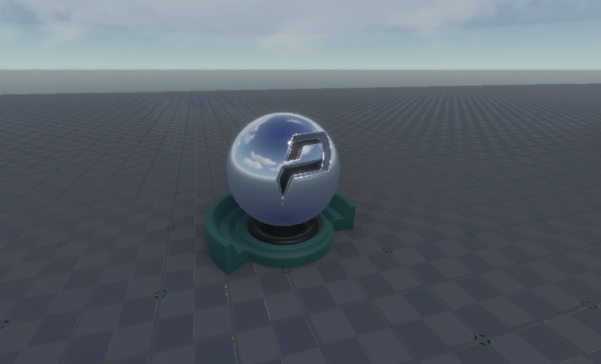

Mesh Component
A mesh component is used to instantiate a mesh asset. Mesh components are purely visual, they have no physical interaction, so other physical objects cannot collide with them. To add physical interaction capabilities, an object has to have an additional collision shape and a static or dynamic physics actor.

Mesh components will cast shadows when the CastShadow tag is set on the owner game object. The referenced mesh is rendered according to the used materials, which determine lighting and other visual effects.
Component Properties
Mesh: The mesh asset to render.Color: A tint color for the mesh instance. Typically this is just multiplied into the diffuse color of the mesh materials, though if the material uses a visual shader (TODO), the mesh color can be used to represent arbitrary input data, for example to blend between material states.Materials: By default the referenced mesh is rendered with the materials that are set up inside the mesh asset. However, the mesh component can override the materials. Each mesh has one or many sub-meshes, meaning mesh parts that use different materials. This array allows to set an override for each of those sub-meshes.